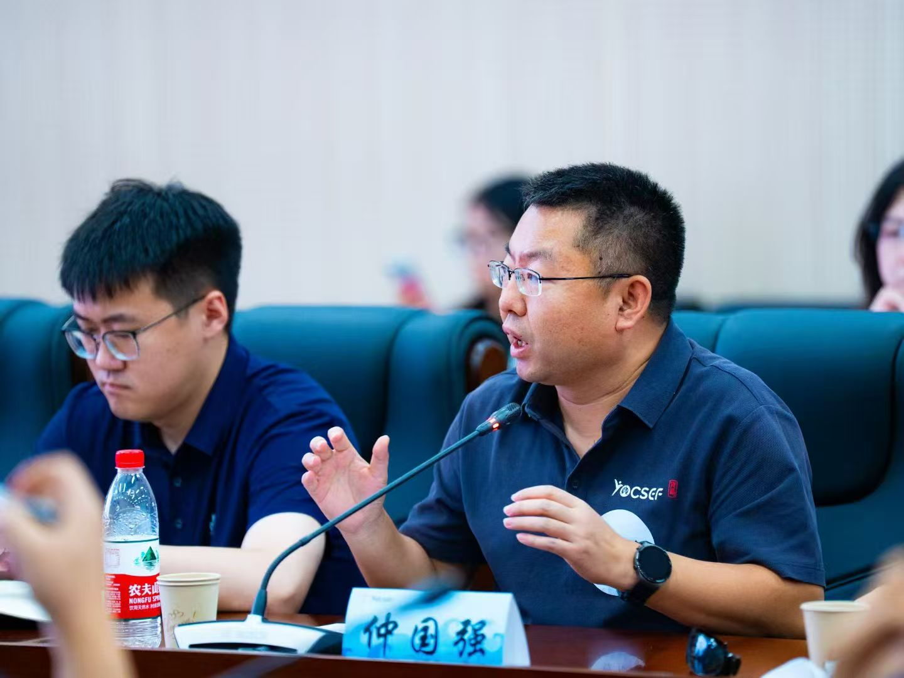
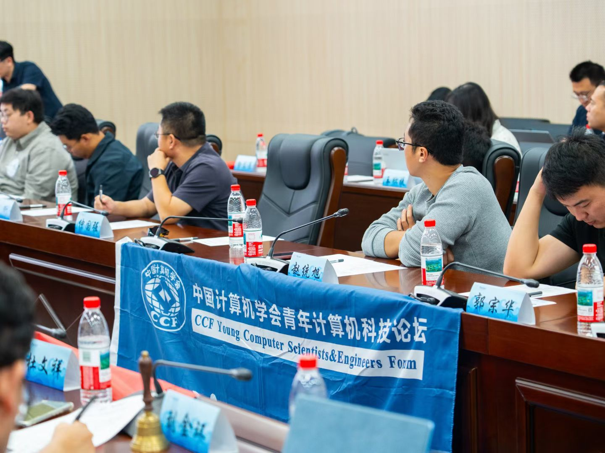
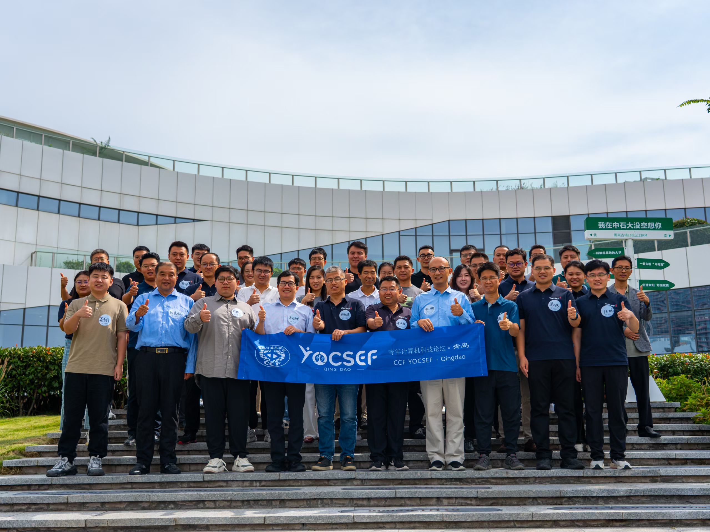
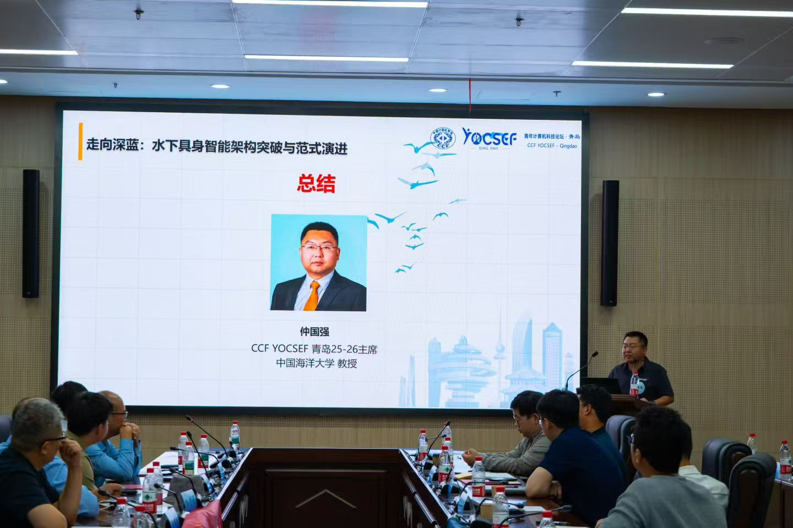

技术论坛 | 走向深蓝：水下具身智能架构突破与范式演进 2025-9-30
9月21日，CCF YOCSEF青岛在中国石油大学（华东）举办以“走向深蓝：水下具身智能架构突破与范式演进”为主题的技术论坛，
聚焦具身智能系统在“感知-决策-系统”三个核心维度的协同突破。同时也面临着新的挑战。

论坛引导发言阶段，董兴辉教授以《水下信息智能感知与处理》为题，系统介绍了其课题组在水下机器人研发、水下图像生成、
水下图像质量评价、水下图像增强、水下图像分割、水下图像实例分割、水下目标检测以及水下结构物检测等一系列水下智能感知与处理工作。
中山大学教授李冠彬教授以《感知与记忆增强的具身视觉语言导航》为题，系统梳理离身智能与具身智能的根本差异，指出具身智能应当以主动理解物理世界、
适应性行为与自主学习为核心，且需在“感知—规划—控制”一体化架构中与平台与数据协同演进。

引导发言结束后，论坛进入思辨环节。与会嘉宾围绕3个思辨议题展开广泛讨论。
思辨议题一：“面对水下视觉/声呐信号受限时，如何实现“水下主动感知”范式跃迁？”
思辨议题二：“水下具身智能如何实现实时决策与响应”
思辨议题三：“如何跨越仿真—现实鸿沟，构建水下多机协同体系”

综合讨论后，形成了几点共识：一是跨越“仿真—现实”的关键在于构建高保真仿真环境，使训练结果能够较大程度地迁移；
二是需要多机协同和分层通信架构，发挥母船、无人艇和无人机的协同效能；三是应通过“阶段试点”模式，从简单环境逐步扩展到复杂场景，形成渐进式落地路径。
与会者一致认为，唯有通过“高保真仿真—分层协同—逐步推广”的整体路线，才能推动水下具身智能真正走出实验室，迈向大规模应用。

最后，YOCSEF青岛主席仲国强对论坛进行了总结。他代表组织方感谢各位专家学者对YOCSEF青岛的支持，并指出具身智能已成为今年广泛关注的热点议题，
总部及多个兄弟分论坛均举办了相关的技术论坛或深度研讨。作为以海洋为特色的分论坛，YOCSEF青岛较早地聚焦水下具身智能，并前瞻性地组织了本次论坛，
可谓恰逢其时。他希望，论坛的交流与成果能够为水下具身智能关键技术的突破注入新动力，推动其从实验室走向真实场景的应用落地。